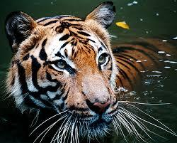

Uche Kalu
Uche Kalu is the Chief Executive Officer of Ouchmann Technologies Global Ltd, a Lagos-based firm specializing in electrical engineering, general contracting, solar and inverter systems, CCTV, access control, surveillance, HVAC, and nationwide Starlink internet solutions. With over 10 years of experience in the electrical and tech installation sector, he leads the company from Lagos Mainland, serving clients across Nigeria

The Federal Republic of Nigeria is Africa's most populous country and a major West African nation, often called the "Giant of Africa" due to its size, population, and influence. Located along the Gulf of Guinea, it borders Niger, Chad, Cameroon, and Benin, covering 923,769 km². It comprises 36 states plus the Federal Capital Territory with capital Abuja. As of 2026 estimates, the population exceeds 239 million (Africa's largest, world's sixth-most populous). It features over 250 ethnic groups (major ones: Hausa, Yoruba, Igbo), more than 500 languages, and English as the official language